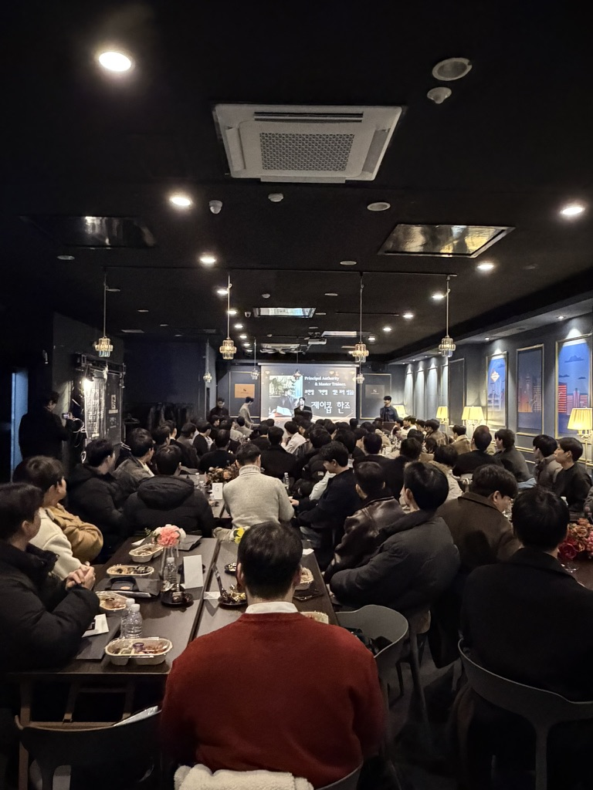
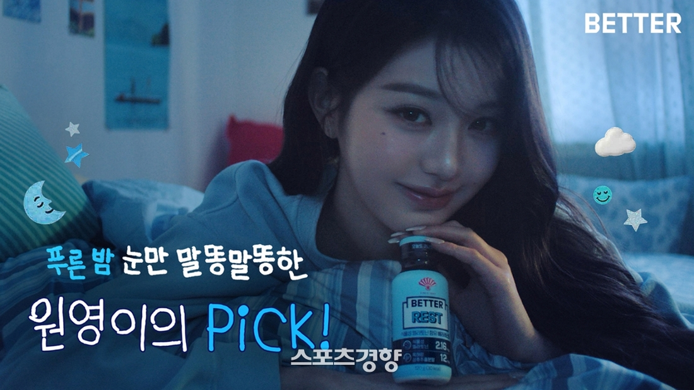
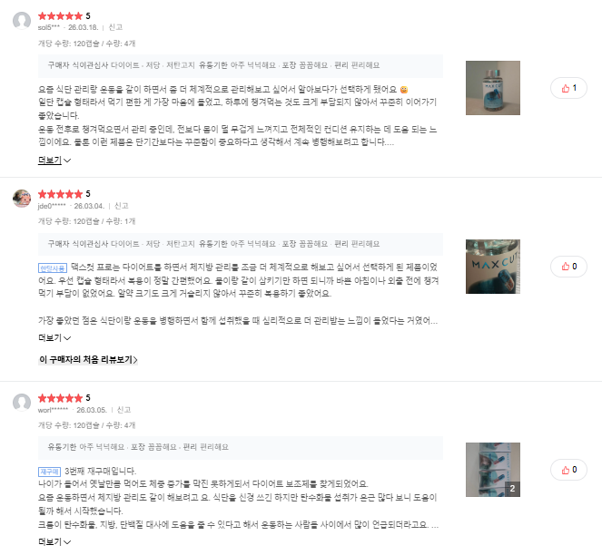
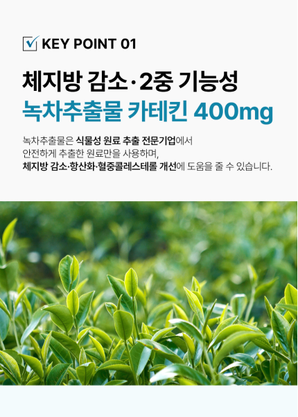
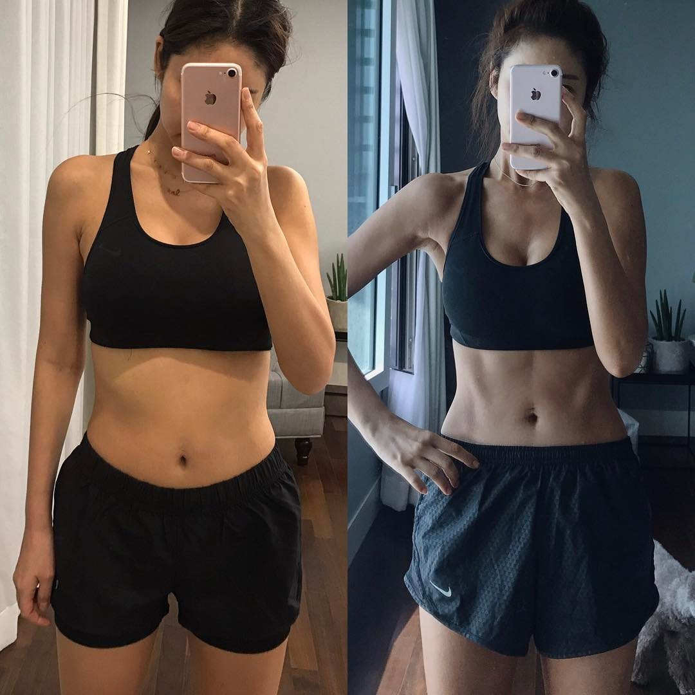
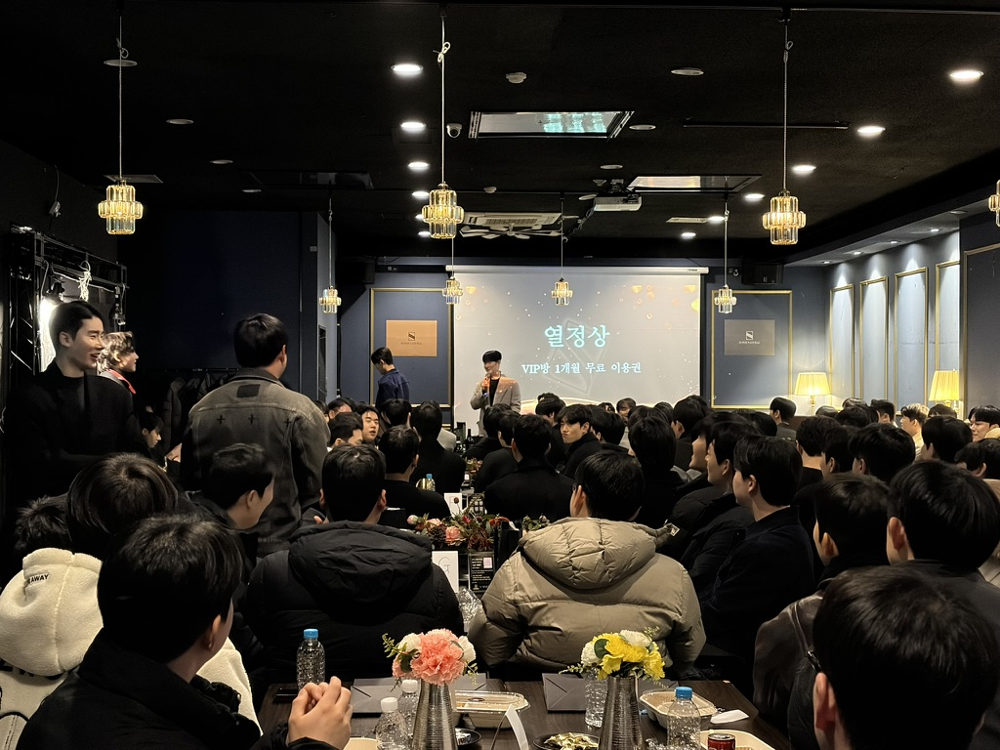
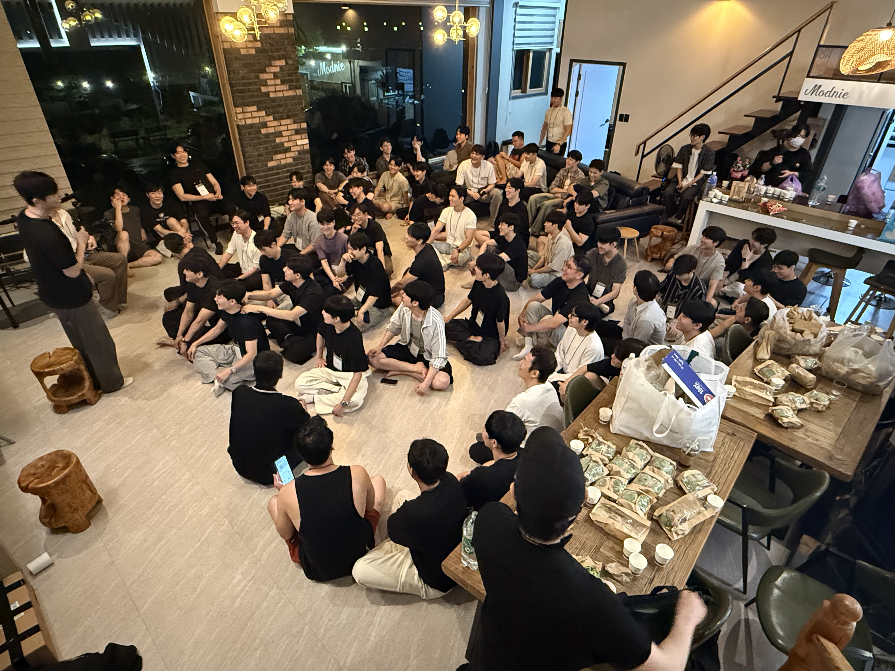
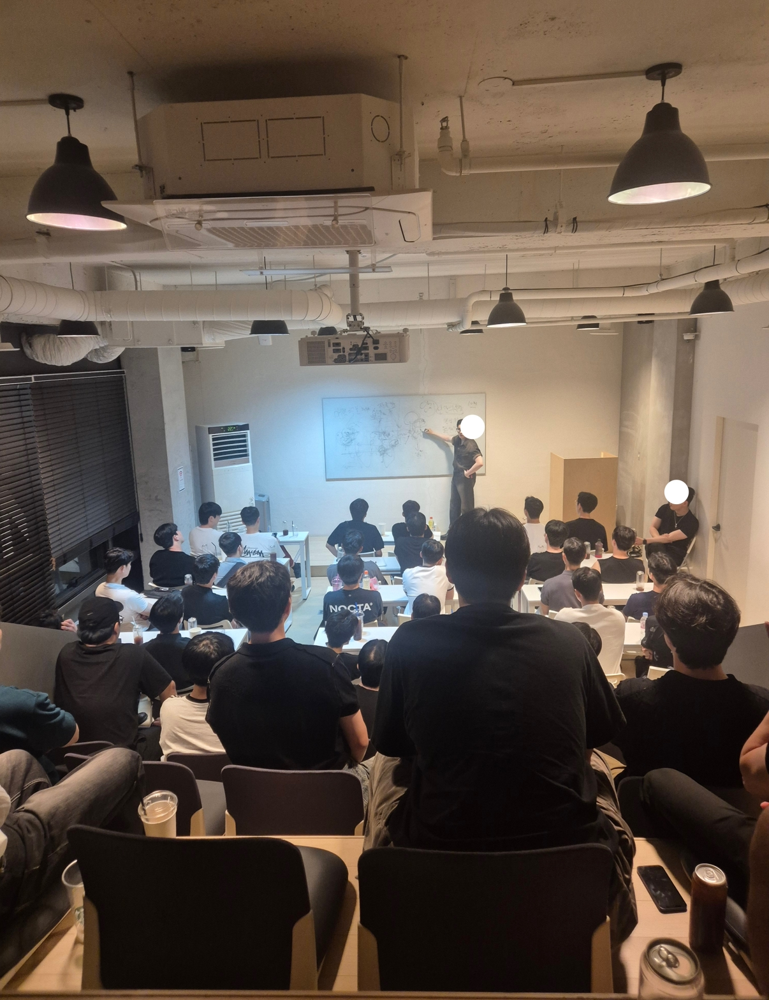

영상으로 직접 확인 1/4
클릭하면 YouTube에서 재생됩니다
: 유혹의 원리
당신이 매번 실패하는 진짜 이유
손 한번 들어보세요.
어쩌다 생긴 일
반드시 바꿔야 하는 패턴
대부분 "어떻게 하면 더 잘할 수 있을까"를 고민합니다.
이제 질문을 바꿔야 합니다. "왜 매번 같은 결과가 나올까?"
이건 사람 문제가 아니라, 구조 문제입니다.
6년을 만난 여자친구와의 결혼 준비
내 돈으로 100% 구한 전셋집과 샤넬백
할 수 있는 모든 것을 바친 결과 = 바람
여자와의 관계란 도대체 무엇일까??
관계의 메커니즘 : 유혹의 원리
방향이 틀리면 열심히 해도 같은 결과
헌신이 배신이 되는 구조적 이유
사업과 연애에 똑같이 작동하는 메커니즘
본능이 원하는 '이끎'과 '서열'의 구조
여자의 무엇을 볼 것이냐?
실전 대화 분석 — 위기를 매력으로
66일 안에 무의식을 바꾸는 방법

모으고, 설득한다.

일단 '보게 만드는 것'
여러분이라면 다음에 뭘 확인하시겠습니까?
후기

상세페이지

Before & After

식약처 기능 인정
질문 하나 드리겠습니다.
이게 있어야 사람은 구매를 합니다.
여자가 내 말을 듣게 만드는 것
대화의 주도권을 확보하는 단계
대응의 4가지 유형
긍정
부정
균열
미정
호기심과 신뢰를 느끼게 만들고,
끌림을 느낄 수 있게 해야 합니다.
CORE
ME
HER
나 (ME)
자유의지
비교
결핍
너 — 여자 (HER)
외모 ↑
능력 →
가치 ↑
호기심 + 신뢰 →
호기심과 신뢰가 쌓일수록, 가치는 올라간다.
'이 남자 뭐지?'
'이 남자 괜찮네'
'이 남자 놓치기 싫다'
이게 있어야 사람은 구매를 합니다.
매력이란
인위적이지 않고, 자연스럽게 끌리는 것
유연
기준
"사람인가?"
서브 단계: 해소
가치 탐색 단계
"도파민과 세로토닌 중 어떤 것을 줄 수 있는 남자인가?"
최종 관문
1단계에서 경계심을 넘기려면
"해소"가 반드시 들어가야 합니다.
해소 없이 다음 단계로 넘어가면
관계는 시작도 전에 끝납니다.
STAGE 1 → KEY
호기심은 생겼는데, 신뢰가 없다면?
여자는 이런 질문을 합니다.
→ 정체에 대해 확인하는 첫 단계
STAGE 1 → KEY
해소 단계를 거쳐 "사람"으로 판정되면,
여자는 당신의 가치를 탐색하기 시작합니다.
이 단계에서 나오는 질문들은 전부
"이 사람이 어떤 사람인지" 파악하려는 것입니다.
사람 자체에 대한 질문
이 질문의 본질
"이 남자, 안전한가? 남자인가?"
대부분의 남성이 이 단계에서
남성성을 잃고 친구가 되거나, 호기심을 잃게 됩니다.
여자는 "이 남자한테 이렇게 해도 되는지" 확인합니다.
가치
시작점
통과
실패
가치 테스트 구간
가치가 올라가는 순간
행동을 지적하는 게 아니라, 관계를 가지고 딜을 칠 때.
테스트를 통과하는 한 마디
"우리 지금 알아가는 사이인데,
이게 맞아?"
행동이 아닌 관계를 걸었을 때, 가치가 올라간다.
여기까지가
여자가 당신에 대해
판단하는 구간입니다.
베타 판정
여자가 평가자 · 관계 위주
알파 판정
남자가 평가자 · 내 위주
남녀 관계에 대한 질문을 던지기 시작
알파로 판정되면, 여자는 남녀 관계에 대한 질문을 던진다:
"이 남자가 정말 나를 사랑해줄 수 있나?"
→ 여자 입장에서 반박하고 싶은 심리가 나타난다
여기서 잠깐 —
여자는 남자의 정체를 어느 정도 확인했습니다.
"이 남자가 나를 사랑할 수 있는가?"에 대한
질문을 던지게 됩니다.
그때 본능적으로 나오는 반박 —
"이 남자가 나의 성적 자원만
테이크하고 떠나지 않을까?"
이 본능에 대한
반박제거가 반드시 필요합니다.
반박제거란?
인스타 광고하는 사람이
"난 인스타 광고 제품 절대 안 사"
하면서 자기 제품을 광고하는 것처럼 —
머릿속에 미리 떠오르는 반박을 제거하면,
그것에 대해 더 이상 고민하지 않는다.
이 시점에서 해야 할 것
관계에 대한 진중함을 어필하면
→ 이 질문들이 나오지 않는다
최종 관문 — "이 사람과 섹스를 할 수 있는가?"
CALIBRATION
여자의 무엇을 볼 것이냐?
먹혔는가?
남녀관계의 텐션이 잡히는가?
유혹의 방향성이 달라진다
이 사람은 부정을 마주하면
어떻게 행동하는가?
기준 = 선택의 방향성
문제를 피하는가?
마주하는가?
고난과 편안함 중에 어떤 것을 선택하는가?
벌과 나비를 쫓는 사람
나의 정원을 가꾸는 사람
벌과 나비가 스스로 올 수 있게.
만약 오지 않더라도, 결국 그 아름다운 정원은 남을 수 있도록.
올바른 기준을 확립하도록 돕는 곳
SUPERNATURAL
여러분이라면 이 상황에서 폰을 들고 뭐라고 치시겠습니까?
(딱 3초 드리겠습니다. 생각해보세요.)
답 알려드리기 전에,
제가 실제로 어떻게 하는지
직접 보여드리겠습니다.
지금 제 카톡 보면서
내일 그 여자한테 카톡 올 때,
방금 본 대로 칠 수 있습니까?
(3초 드릴게요. 솔직하게.)
변명 + 사과 + 약속 = 가치 하락 3종 세트
짧고 여유 있게 무의식적 감정을 건드림

클릭하면 YouTube에서 재생됩니다

클릭하면 YouTube에서 재생됩니다

클릭하면 YouTube에서 재생됩니다

클릭하면 YouTube에서 재생됩니다
씨앗의 종류를 아는 것과, 실제로 심어서 꽃을 피우는 것.
그 사이에는 66일이라는 거리가 있습니다.
University College London 연구 (2009)
오늘 2시간 강의로
66일의 체화가 가능할까요?
66일, 혼자도 가능합니다. 단, 어떤 씨앗인지 알아야 합니다.
잘못된 씨앗으로 66일을 보내면 — 잡초밭이 됩니다.
올바른 씨앗으로 66일을 보내면 — 정원이 됩니다.
혼자 시행착오로 가꾸기
"가능합니다. 다만 시간이 걸립니다."
설계도를 받고 가꾸기
"같은 정원, 다른 속도."
어느 쪽이든 정원을 가꾸는 건 여러분입니다.
관계의 메커니즘 심화, 칼리브레이션 마스터, 4단계 관계 설계, 프레임 역전 실전편 등
읽씹, 테스트, 데이트 후 — 어떤 씨앗을 심을지 실시간 감별
가입 시 무료 제공. 정원 상태 진단 + 설계도를 함께 그립니다
카카오톡 보이스룸
한조님 직접 진행
디지털 바우처
멤버 전용 혜택
슈네 멤버 전용가
씨앗부터 정원 완성까지 — 모든 도구가 한 곳에.
현재 멤버 210명+ 활동 중
명의 멤버가 매일 활동 중
매주 카카오톡 보이스룸 라이브 강의
실시간 카톡 피드백 + 멤버 간 교류
혼자가 아닌, 같이 가꾸는 정원
여러분의 정원에 필요한 씨앗, 전부 여기 있습니다.
멤버십 회원 전용 오프라인 모임 · 100명+ 참석



그녀가 테스트를 걸었을 때 —
흔들리지 않고 웃으며 대응하는 자신.
읽씹당했을 때 —
불안 없이 여유롭게 기다리는 자신.
그녀가 다시 먼저 연락했을 때 —
담담하게 웃는 자신.
그 자신은, 생각보다 가까이 있습니다.
SUPERNATURAL MEMBERSHIP
가입 즉시 1:1 무료 상담
강의 72개+ 즉시 열람
카톡 피드백 무제한
오늘 강의 참석자만 150,000원 · 이후 정상가 200,000원
하루 커피 한 잔 가격으로 정원 설계를 시작합니다.
신규 가입 시 1:1 상담 무료 제공 (10만원 상당)